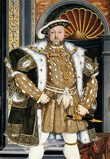

Many people recall a painted portrait of Henry VIII holding a turkey leg in one hand.It’s among my memories, too. It was a classic painting of Henry VIII, in the Holbein style (at right), but Henry is shown enjoying a hearty meal. I recall something that looked like a turkey leg in one hand. (I thought it was his left hand — on the right side of the canvas — but I may be wrong.)
I also recall a large, opulent goblet in front of him. I assumed it was to show that God had blessed the monarch with good health and a comfortable lifestyle.
(Portrait artists sometimes included symbolic objects in portraits. The Petworth House portrait on the right shows the king holding his gloves in his right hand. That was a symbol of luxury and refinement, frequently used in his portraits.)
Apparently, the “turkey leg” portrait doesn’t exist. It never did… not in this timestream, anyway.
That’s odd, because so many people seem to recall it.
My memory is so clear, I’ve wondered if Mad magazine or another parody in the media had morphed the image from one of the monarch’s famous portraits. So far, I can’t seem to find one, but it’s the most rational explanation, if one ignores alternate history possibilities.
Henry Tudor, King of England, lived from 1491 to 1547 and ruled between 1509 and his death. He was well-known for his banquets, though he may not have been as “well-fed” as his portraits suggest. Some historians say that he was trim most of his life, but gained weight shortly before his death, when an old leg injury prevented him from being very active.
The turkey question
Some insist that Henry VIII couldn’t have dined on turkey, because the turkey was native to North America, and it wasn’t available in England in Henry VIII’s time.
That’s not true.
During Henry’s time, guinea-fowl were a delicacy in England. They were generally imported through Turkey, so they were sometimes called turkey-fowl, shortened to just “turkeys.”
However, if you look at a photo of guinea fowl, they look like partridges. In the apparently non-existent portrait, there’s no way Henry VIII was brandishing a guinea fowl’s leg. It may have been the leg of a peacock, a large chicken, or some other big bird, but not likely a guinea fowl, unless the bird had been bred for unusual size.
The North American turkey was introduced to England by Sir William Strickland, after — as a youth — he’d accompanied Sebastian Cabot (1483 – 1557) on his American voyages. Strickland is attributed with the first known drawing of a North American turkey. It’s in the College of Arms, when Strickland applied for a coat of arms that included the turkey in his family crest.
So, it was possible for King Henry VIII to dine on a well-fed North American turkey. Without a painting to look at, it’s impossible to decide the best explanation.
(Some people suggest that some portrait might show a rumored, oversized thumb on one of Henry’s hands, not food. Except for one “Straight Dope” comment, I find no references to a defective thumb or a “Tudor thumb.” I’m dismissing that as a possibility. If Henry VIII had a thumb so deformed it could be mistaken for a turkey leg, it’d be a popular topic at Tudor-related forums.)
The problem is, no one can find anything like “turkey leg” portrait, though it seems to be a clear memory for many people.
The turkey leg reference is popular, whether or not the painting exists. For example, in the 15th season of The Simpsons, the Margical History Tour episode closes with a reference to Henry VIII holding the world turkey-leg eating record.
Some people point to the Charles Laughton portrayal of Henry VIII in a movie. I’d never seen it, so I’ve posted the clip below. (If you don’t see the Flash clip, it’s also at Turner Classic Movies.)
Some people seem to think the issue comes from the dining scene, in which actor Charles Laughton devours a chicken with considerable zeal. (That’s a screenshot on the right.)
Maybe that’s true for some people with this memory, but — even if I’d seen the movie as a small child and later forgot it — what I recall was in color, and it wasn’t funny.
The chicken leg in Laughton’s left hand is a match, as is the large goblet, but that’s where the resemblance stops.
If anything, I’d suspect the Laughton movie scene was inspired by the same portrait I recall.
My memory includes a somewhat serious portrait, probably attributed to Holbein the Younger. It showed Henry VIII, full face, looking at the portrait painter. Something like a turkey leg was in Henry’s hand, and I recall a goblet as well. I don’t remember what the table looked like, in front of him. I’m not sure it was visible, but I don’t remember it not being there, either.
I’m about 90% certain I saw this painting in real life, probably “backstage” at the Boston (MA) Museum of Fine Arts, where my aunt co-supervised the verification of paintings, detecting forgeries.
If you remember a painting like this, or can shed fresh, credible light on why so many people seem to recall it, please leave a comment.
I’m still leaning towards the idea that a parody portrait exists, somewhere, and it’s convincingly like the Holbein portaits. So far, I can’t seem to find it.
I can clearly remember seeing a painting of Henry VIII holding a turkey leg. Doing a Google Image Search shows numerous cartoons and screenshots from films of Henry VIII eating turkey legs, but the painting I remember is nowhere to be seen.
The funny thing is that for the past six summers I have worked in a school founded by Henry VIII (I live in England). They have a huge painting of him in their dining hall, and I remember when I first saw it I wished they had included the turkey leg. That’s how ingrained it is to my memory.
Your remembering the actor who played in the original scrooge the black and white version where the ghost of Christmas present was dressed similar to Henry the 8th and he did have a turkey leg in the first shot.does that help Keith.
Keith,
I can’t speak for Mr. Knighton, but I’m certain I’m not confusing a b&w movie with a Holbein-type painting.
Sincerely,
Fiona Broome
I remembered that painting… I think I saw it in a history book.
I think i saw that painting in a history book as well, but i could’ve sworn that i had seen it on the Internet as well several years back… I am sure it was a painting.
A middle school or highschool history book, right? This is going to drve me crazy now lol
Yeah im certain i remember seing it in a history textbook too. Either in middle school or highschoolthis is wierd.
Henry VIII died before turkeys were ever imported into England, I have no recollection of ever seeing him eat one. One of the things I remember being taught about him was his gluttony, and eating a whole turkey leg quite gluttonous. Possibly someones mind would make the connection between the two.
Daniel S.,
In early England, turkeys (also called guineafowl) were imported from Turkey. According to Wikipedia, that’s how the popular term, “turkey,” was applied to them. Initially, explorers thought that American turkeys were another variety of guineafowl (or guinea fowl), so the nickname stuck for those birds, as well.
I’m not sure how early turkeys were imported to England. Henry VIII died in 1547. By 1550, navigator William Strickland was given a coat of arms that included the image of a turkey, because of Strickland’s role in making turkey a popular food in England. (Shakespeare referenced turkey in his play, Henry IV, indicating a far earlier history. However, Shakespeare may have been mistaken.)
In other words, I’m not sure if Henry VIII had access to turkey dinners during his lifetime.
That said, the leg in the painting could have been from a very large chicken. The leg could even have been from a very small chicken, but made to look more opulent in the painting. (After all, it’s not a photograph.) It could have been from guinea fowl, a goose, or a large duck. Since the painting didn’t have labels, many of us think of the poultry in Henry VIII’s hand (in the painting) as a turkey leg because, to us, that’s what it looks like.
So, I agree, it might have only looked like a turkey leg.
Also, while I appreciate your candor in sharing your recollections of Henry VIII, past-life memories aren’t reliable enough to include in this discussion. In fact, they’re likely to open a can of worms I’d rather avoid.
Let’s keep the focus on the painting. The question isn’t so much about what large poultry item was actually in his hand. Instead, we’re trying to determine if this timestream includes a Holbein-style painting showing Henry VIII dining on something that looked like a large turkey leg.
Thanks.
Sincerely,
Fiona Broome
Pretty sure people are mis-remembering this picture
The right arm does somewhat resemble a large turkey leg.
Ancient Lurker,
I’m trying to decide if this comment (posted four times in a row) was a joke or not. Here’s why:
He is looking at the artist, full face. The expression is close to what I recall, but not the same age as in the painting I saw. And, I’d be willing to agree that I might be mis-remembering the predominant color of his garments. So, those elements of the painting are a match or close match… but so are many other Holbein-type paintings of Henry.
Like several people who’ve commented here, I’m so sure I saw the painting I’ve described, I’ve spent many hours — easily 10+ hours — doing online image searches and visiting libraries to see illustrations in their bios of Henry VIII. So, I saw images like this at Wikipedia early in my research.
If your comment was serious, thank you for your efforts.
If this was a prank, to quote (a phrase perhaps mistakenly attributed to) another Royal: We are not amused.
Sincerely,
Fiona
I’m wondering if Ancient Lurker meant to write “the left arm.” Just the outline- the shape – could resemble a turkey leg, if one did not look closely at all. (Although I agree it’s not the painting.)
Thanks, Julia!
I took another look and I can see your point. For me, it’d be a rather big stretch to confuse his entire arm with a turkey leg, but the color and general shape… I can sort of see it.
Still, until you gave me that context, I didn’t see anything in that painting that could be confused with a turkey leg. I’d have to be in the mindset of “find the hidden objects” when I’d looked at the painting, to walk away with that idea.
He’s not at a table. There is no other food present in the picture, even in the full view ( https://en.wikipedia.org/wiki/File:Family_of_Henry_VIII_c_1545_detail.jpg#mediaviewer/File:Family_of_Henry_VIII_c_1545.jpg ). And, as I see it, his hand is empty, except for the arm of the chair.
My memory includes his arm being slightly up, holding the turkey leg. As a child — having “good manners” drilled into me at home and at school — I remember looking to see if his elbow was on the table. (I know… the priorities kids have, sometimes! LOL )
However, I appreciate your comment. It makes it a little easier for me to give Ancient Lurker the benefit of the doubt.
Yesterday, I’d deleted three rather vicious, sarcastic comments about this site before I reached his, and he’d posted his comment four times. I’m sure I wasn’t in as generous a frame of mind as I could have been.
I always want to understand when (and how) people are trying to be helpful. So, I’m grateful for your efforts to see what Ancient Lurker might have been looking at.
Thanks!
Cheerfully,
Fiona
100% not the picture that I remember.
It would be awfully interesting if someone with the talent who remembers the Henry VIII turkey leg picture could do an artist’s impression and see if it matches up with other people’s memories.
I definitely remember a leg of some fowl (not necessarily turkey) in his left hand, so right side of the page in a picture of him. I believe I saw it in one of my old social studies books, sadly I went to public school so its not like I still have those books to check.
I also remember that particular painting from my history book. Mad Magazine also did a parody of that paining in the 70’s.
Yes, I remember it too. As someone always teased about food, you notice a VIP doing something unusual w/food (to us that is). Back then, food and fat was status and showed much wealth because everyone else was literally starving, so I can understand in hindsight why he did the painting w/the turkey leg. People that don’t realize that would just up front think the whole thing was a hoax, but food was a big thing back then and unfortunately today too. The Irish had a large migration away from their land because of starvation due to too cool weather for several years running affecting the crops. Have no idea if that is the same time period, but you get the idea. Feudal system.
I’ve never once seen the version where he is not holding a leg of meat.
I’m 110% sure I’ve seen this picture too, reproduced in b/w in some book or another. The idea that it’s an impossible image because it’s a “turkey leg” is ridiculous; pheasants (which certainly were present in 15th century England) have similar looking legs when cooked.
Furthermore, roasted pheasant is exactly the sort of luxury food that a king would be depicted eating
My husband and I both have this memory.
I remember seeing this painting too, probably in a social studies textbook in middle school. Perhaps he was holding a scroll instead?
I remember this too..weird..
I remember that picture too, I swear I have seen in throughout my education. I have googled it and I cannot find it, this is weird because I do remember it vividly.
I distinctly remember this exactly how the author describes, i don’t recall the goblet thing though, just him holding a turkey/large chicken leg in his left hand pointed upwards, he is seated i believe and the leg is on the right side of the painting. I can’t find it anywhere on google. WTF
@JonnytotheG
That’s how I remember it too.
It occurs to me that part of the reason why it’s hard to find is because it wasn’t a painting at all–it could have been an engraving/lithograph/etc that was done years after the fact. An 18th century engraving of Henry VIII with a turkey/pheasant leg would look generically “old” to modern day viewers. It could easily include an actual turkey leg too–the concept of “historical accuracy” is a relatively recent invention.
I came upon this site by accident and was reading through your list of memories thinking that perhaps you were a little dotty (sorry) but then this Henry VIII picture. My daughters studied the Tudor era in school fairly recently and my eldest drew this EXACT picture. Down to the goblet. She says she copied it. I am definite that I have seen this image. So I thought it was a wind up and decided to google it. I’ve been googling for a very long time now. And I can’t find it.
So, I’m sorry for judging you. But you’ve really creeped me out now!
I’ve never seen the movie “The Private Life of Henry VIII” but I can easily picture in my mind an old portrait of him with something that looks like a turkey leg. And I haven’t done much reading about him either. If you just google “Henry VIII turkey leg” all kinds of people make that association and think of him as a “turkey-wielding monarch.” It had to come from somewhere.
have never seen any movies about him but do distinctly remember the turkey leg and goblet in the holbein-type portrait
Weirdly enough, I remember this from childhood, too. I grew up a few miles from Hampton Court Palace, and the Tudors and Stewarts was a topic we studied at length when I was around 10 years old. My memory feels more connected to the year above that, though.
The picture in my mind was (perhaps predictably) rich reds and golds and he was wearing a puffy sleeved jacket which had red and gold sections, a bit like folds running lengthways. He had a large piece of meat in one hand, on the right hand side of the picture, although I think I assumed it was more like a portion of a lamb or suckling pig’s leg.
When I came across this link in the list, I immediately thought “…wait, that wasn’t real?”. I definitely remember seeing a colorful portrait of Henry VIII, in full king regalia, with a turkey leg! I think you are probably right about the parody painting, but it is kind of a weird situation, nonetheless.
I am flabbergasted this apparently doesn’t exist. Like another poster, I don’t remember the goblet, but as soon as I read the title, I knew exactly what it was referring to. I recall that there was a bite taken out of the meat as well.
I came across this old (early 2004) random thread referring to the turkey leg painting as if it were a well-known thing.
http://boards.straightdope.com/sdmb/showthread.php?t=251696
Some of the replies are useless but as the thread progresses, you see more and more people not finding it on Google. This comment refers to a 1933 movie, but I couldn’t find an actual turkey leg still:
The modern popular image of Henry VIII ‘munching on a big leg of something’ (as lambchops puts it) entirely derives from the 1933 film, The Private Life of Henry VIII. I can’t remember if the type of meat is actually specified; I rather doubt it. That image was in turn influenced by Victorian genre paintings on the theme of ‘Merrie England’ which often showed feasting at the Tudor court or in an aristocratic great house.
Unsurprisingly, none of this had anything to do with Henry VIII’s actual dining habits. At that date, serious research on the culinary history of the Tudor court had barely begun.
Also, a quote from some totally unrelated blog post (first paragraph: http://adtrosper.wordpress.com/2014/05/03/turkey-legs-i-dont-think-so/)
” Well sure we all have the image of the pompous lord or king chowing down on a large hunk of meat while throwing bones behind him for the dogs to fight over. And sure there is a painting of Henry VIII holding a drumstick of some sort ”
This is really really bothering me lol, I absolutely can picture that painting clear as day.
Well here is an artwork of Henry eating a turkey leg, from an artist who died in the 1980’s.
http://www.lookandlearn.com/history-images/A011204-02/King-Henry-VIII-eating
Donna, that may explain some memories, but not mine. I know I’ve never seen that comic-style illustration before.
As I think I described earlier, my memory is a Holbein-style painting, full face, looking at the artist, turkey drumstick (with piece missing) in one hand. Goblet on table in front of Henry. Very clear in my memories.
I remember this painting,also.
This one is easily explained. In several paintings, his shoulders are drumstick shaped, large, and golden.
Will, I trust that’s sarcastic humor. Some of the replies to this thread have been pretty silly, and your humor is appreciated!
The image of Henry the 8th that comes to my mind is him eating a massive turkey leg. taking a massive bite out of it while his elbow is extended out and the ley in a horizontal plane. I recall me and my siblings joking about it as children at the dinner table. The odd thing about it is, I can’t ever recall actually seeing a picture of that scene other than in my imagination.
My feeling on this is we probably saw a skit alluding to that on maybe a show like “I love Lucy” or “The Carol Benet Show”, something like that.
Odd to say the least.
Stackpot, I can imagine at least one parody on TV, based on the Charles Laughton version of the Henry VIII tale, and that movie had a similar scene.
On an episode of the old television program Happy Days, a Halloween Party was to be held. Mr. Cunningham chose to dress up as Henry VIII. As part of his costume, he had a Turkey Leg in his hand, while wearing the full monarchical regalia.
At some point, some kid comes to the door, trick-or-treating. Mr. Cunningham answers the door and explains that he is all out of candy. So the kid snatches the Turkey Leg. This prompts Mr. Cunningham to lament that he can no longer go to the Halloween party dressed as Henry VIII. Not without his Turkey Leg.
The purpose of the Turkey Leg however, was not to evoke some well known medieval painting. It was only to set up the gag that follows.
Richie Cunningham picks up a Banana and quips; “Well, you can always go as King Kong.”
I thought this joke absolutely hilarious as a child. Evidently, so did many other children my age, as the association between Henry VIII and the Turkey Leg became indelible in many young, impressionable minds.
Cute anecdote, Christopher, but my memory of the painting was far earlier than the “Happy Days” TV series. So, for me anyway, this isn’t an explanation. In fact, it supports the idea that the Henry VIII-turkey leg association was iconic enough for Mr. Cunningham to use as costume inspiration. So, one might question where that character came up with that idea.
I remember the painting very well myself and i believe i have an explanation to what is happening. Over the last few years I’ve noticed us “shifting” or traveling between dimensions and things I’ve seen my whole life change as a result. I’m a very spiritual person that does believe in God, and he allows me to see things most people don’t.
Most would probably think I’m crazy and that’s fine, but we can’t ignore the reality. I do believe some things are just people misspelling something or remembering it wrong from childhood. However, i too remember Berenstein, Gordon’s Fisherman, the hot air balloon ride, etc. The altering time lines or dimensions is a sign of the end of the world. There are other worlds bleeding through to ours as well that do not have all of these anomalies. If you don’t believe that look to the sky and tell me that it’s always been that way.
And by this point if you don’t think I’m totally nuts i commend you for your open mindedness. Just remember that everyone has the ability to see beyond what’s right in front of you. All you have to do is ask. And don’t let the ignorance of society keep you from believing these things and asking these questions, because if you’ve read all the way through this you probably already know things most people don’t.
Nicely said, Dustin. Thanks!
I remember this painting. Although I remember him holding the leg in his right hand (left side of portrait) with a goblet in the forefront on the right side of the portrait but not a full shot of the glass and stem, just the top part and it’s jewel encrusted rim. My husbnd remembers it as well. This is a very interesting site. I believe we are on to something!! I can’t stop thinking about these strange occurences. Thanks for the hard work and keep it up.
I remember exactly the same thing as you and I think his leg was visible to the right of the portrait. The clothing was similar to the other picture in color and style.
exactly!
Me too
This probably sounds a bit extreme, but any theory’s as good as the other.
Maybe it was a painting, but it was bought by some private collector before there were any pictures of it on the internet, and he/she wants to keep it to him/herself? You never know.
Dean, that is as good a theory as any. Thanks!
SOLVED – Pepto Bismol TV commercial 1980 http://www.retrojunk.com/commercial/show/10113/pepto-bismol-with-king-henry-viii
I had the same memory, but not so sure it was a painting. I found this answer with a simple Google search. You have to try just that little.
I notice that many of these incorrect memories were formed when the person was a child. All sorts of conflation and dreams going on – “memories” made concrete (“I’m absolutely sure”) by self-reinforcement over time.
Rick,
Thanks for that link! It may be the answer to some confusion.
For me, it’s not. I didn’t watch much commercial TV in 1980. I never have. Even now, I use Roku, not networks or cable TV. So, I hadn’t seen that commercial before.
My memory is very clear, and it was a Holbein-style painting. So far, among the suggestions, I like the idea that it did exist and was privately acquired. With that acquisition, all references to the painting were scrubbed.
But, then again, maybe mine is an alternate memory, after all. I haven’t a clue, and just add it to the list. For me, whether or not that painting exists in this timestream… not exactly the meaning of life. Cool, but not vital information.
Cheerfully,
Fiona
I don’t remember the turkey leg. I do, however, remember the goblet. It also bothers me that his outfit is gold – no matter how much I try, I seem to remember it being red, almost maroon, not gold.
Fiona, it doesn’t matter if you saw the commercial or not. What matters is that there exists in the collective unconscious a strange assemblage of visual objects connecting the famous Holbein portrait with the Pepto Bismol commercial. Somehow, the interplay of these two images has created the primary oneiric template through which Henry VIII is perceived. When we think of Henry VIII, the first image that comes to mind is drawn from this strange composite, since visual content remains undifferentiated on the dream level.
Jon, you’re assuming a collective consciousness. While that’s possible, I’m not convinced it’s the explanation in this case or all others.
Yes,i remember him with turkey leg.
(i’m from Ukraine)
I SWEAR this existed. I have goosebumps, I can’t find it anywhere. My family don’t know what I’m talking about. I can still see it in my head, I recall seeing it in history books at school. To my memory, it was a very well known painting and I cannot understand how my family can’t remember it. Interestingly, they also insist that it’s always been berenstain when I remember stein, AND I’m 100% sure I’ve never heard them say stain before until just now. Always stein. Looks like I’ve hopped timelines and they haven’t.
The Turkey Leg thing must be a real meme because the Simpsons did a whole bit on it: http://vimeo.com/66512566
There was also a reference to it on Clarissa Explains It All, where she was boxing characters on a PC game, one being Henry the VIII with the turkey leg.
It’s pretty easily understood.
Henry the Eighth is often stereotyped as a glutton, and is painted almost exclusively in this style. We see him in a lot of other media (including many children’s textbooks) with a turkey leg. The turkey leg is visual shorthand for gluttony.
Neuroscientists believe that every time you remember something, you revise it in the context of what you already know about it. So all the things you remember about Henry the Eighth are stitched together when you think about him or learn something new about him.
A lot of these boil down to just that: The mistaken assumption that memory (and other processes like reading) are infallible.
Max,
No, this can’t be brushed off as “visual shorthand” related to a stereotypical description. Otherwise, we’d have lots of people “remembering” a portrait of Henry the Eighth with a bloody headsman’s axe in one hand. I’m fairly certain he’s more remembered for the regrettable wife problem than his eating habits.
I’m not confusing this with a picture from a children’s textbook, either. I remember him in a Holbein-style painting, at least as tall as I was when I first saw it, up close. That was probably behind the scenes at the Boston (MA) Museum of Fine Arts, where my aunt was one of the two department heads who examined paintings to be sure they weren’t forgeries.
I don’t revise the context every time I remember that. It’s the same memory, every time I reflect on it. Huge painting (relative to my height at the time), rich colors, very Holbein-like, turkey leg (or what I thought was one… may have been a really large chicken leg or something similar), and I saw it in person from less than five feet away. I could go on & on about the context, but that’s probably a waste of my time. The point is: That memory is very clear and consistent.
I think we’re all bright enough to realize that memories aren’t infallible. All I need to do is forget where I put the car keys, and I’m reminded of that.
I believe that most people are the same in that respect. We expect to find a logical explanation for each incongruous memory. That’s why we double-check our apparent memories to see if there’s any way we confused what we recall. For many of us, it’s a relief to discover where a mistaken idea came from.
However, by the time we talk about those memories here, we’ve usually gone down that path and come back with no reasonable explanation for the clear, relatively unwavering memory that doesn’t match history in this timestream.
Sincerely,
Fiona Broome
Actually, Fiona, you’d be pretty surprised.
As for your latter point? Part of it has a lot to do with what flies in caricature– he’s not often caricatured with a headsman’s axe, but if you google “Henry VIII Turkey” or “Henry VIII Food” you can find a ton of examples of this specific visual trope. The Private Life of Henry VIII is probably ground zero for it, but again, it’s turned up in various places. Heck, Burger King actually used Henry the Eighth as part of an advertising campaign for its King’s Turkey Legs Combo last year.
Additionally… Like it or not, you *do* revise your memory every time you remember something because memory is a more holistic, full-brain process that involves multiple connections rather than the sort of library or archive model that most of us just assume it is. Daniela Schiller, Karim Nader and Donna Bridge, amongst others, have found consistent results to support this model of memory time and time again in neurological and psychological studies. It’s by no means a conscious process, but rather an inadvertent side effect that has to do with how the memory stores ideas and associations between ideas.
As for consensus amongst you and your readers? Repeatedly recalling, contemplating or discussing a memory (as you and your readers do) actually increases the rate of revision according to Bridge’s research. I’d hazard that a big part of why so many people overwhelmingly have these same false-memories is that this kind of discussion creates a consensus that people gravitate towards during the process of revision.
Max,
I was fine with this (in an “agree to disagree” way) until I got to the part where you describe this topic as “false-memories.” That may be your opinion, but this site isn’t about debating the validity of our memories, which — in many cases — have too many consistencies to write off as brain glitches. (Plenty of other sites are happier with that explanation. I’m not trying to make this site “all things to all people.”)
Minor memory revisions…? No problem. Returning to the keys example, when I do misplace them and find them again (because I keep looking, elsewhere), I’m likely to say, “Odd. I could have sworn I left my keys on the kitchen counter.”
I also consult my favorite chocolate chip cookie recipe to be sure the measurement is a teaspoon of baking powder and not a tablespoon.
Those are the kinds of things people do every day, rather than trust minor, fleeting memories.
And, I’m in agreement about derivative, creative works reinforcing a related memory. I see the caricature (or whatever) and it reminds me of the Holbein-type painting. In my mind, it references the original painting. Assuming it was painted by Holbein (the Younger, c. 1497 – 1543, http://www.hans-holbein.org/ ), not one of his contemporaries or a later artist working in that style, there are probably many references to that painting in the 450 (or so) years since it was painted. Every one of them is likely to reinforce the original memory, and may alter it in a minor way.
However, the base memory remains the same. It’s relatively unwavering.
Likewise, no matter how many times I see “Alien” or its sequels, I’m not likely to confuse it with “Dark Star,” nor do the derivative elements significantly alter my original memory of O’Bannon’s 1974 film. I acknowledge the similarities, and still delight in the zany differences.
And while I’ll cheerfully agree that Mandela’s widow may have been wearing a green dress instead of a black one, or her broadcasted, eulogistic speech may have been in front of a small building rather than a large tree, the key elements in that memory — or its very existence — don’t vary.
I’m happy to discuss topics related to reasonable explanations for what we remember. However, the “false memory” whitewash won’t fly here.
Sincerely,
Fiona Broome
Hi Fiona,
I have (or believe very strongly that I have) quite memories of this painting. It was, as you say, in Holbein-type style and I remember H wearing a green robe and holding a drumstick of some kind and a goblet. I particularly remember how the skin and muscles of the drumstick were portrayed to look a bit chewed, and that I thought H’s hands looked too small. Weirdly specific if not real!
jenzo
I actually remember the painting in question from a history book from 6th grade and it was next to a picture of Anne Boleyn and it was talking about him getting a divorce instead of beheading her. Nothing was mentioned about gluttony and he was definitely holding a leg of some sort of large fowl and there was a goblet. I also seem to remember the robes being red or burgundy and gold as well.
Bacchus I recall it from a school book as well it is so vivid and exactly the same as what you have described.
Check this photo description out
http://www.cracked.com/blog/5-artifacts-that-will-shatter-your-image-middle-ages/
“Turkey drumstick in one hand, lady parts in the other
Read more: http://www.cracked.com/blog/5-artifacts-that-will-shatter-your-image-middle-ages/#ixzz3FTiBc0bE“
Jon, that’s a great find! Ordinarily, I raise an eyebrow at “Cracked” articles, but this one is intriguing… at least regarding Henry VIII. (I didn’t read the entire article, but I did check the Royal Armouries site for their version of the story.)
Thanks!
Right.
I do clearly remember this picture too. Dark, royal red regalia with a gold trim; sitting at a table; Turkey leg in left hand; goblet on the table to his right. I can not remember seeing the table itself, but I distinctly remember the impression of one. It looked as if he was seated, though I cant remember a chair behind him either. He was not crowned.
As far as all the theories around this particular mystery go, I’m only 19 years old; born 1995. I wouldn’t have been able to see any advertisements from the 1980s; certainly not enough to have them engrained in my mind. Not only that but the advertisement linked is nothing like my memory of this picture. As far as the black and white movie; I dont make a habit of watching black and white movies, and again, it doesn’t match my memories of it.
It’s intriguing, actually, that I can’t find this picture. I clearly remember seeing it even recently.
Wow, this is something I remember quite clearly. I’m actually getting pretty stressed not being able to find this anywhere!
I remember the same painting. Turkey leg was in hand on the right side of the painting. He was wearing a burgundy color and he had a gold goblet on the table in front of him.
Here is a photoshop mock-up of how I remember this Henry VIII Turkey Leg image:
http://www.reddit.com/r/Glitch_in_the_Matrix/comments/23oc33/have_you_seen_this_image_before_henry_viii_turkey/
Anyone resonate?
JM,
That’s a fun mock-up ( http://i.imgur.com/44UFP2K.jpg ). Thanks!
I wish it were a match for my memory, but it’s not. I should sketch the elements in my memory, so we can pool how we recall the painting, and maybe create an image close enough to solve the mystery via Google Image Search.
Cheerfully,
Fiona
I looked this up because someone else in another article mentioned something about Henry VIII and the turkey leg and the first thing that came to my mind was exactly that painting. I found this article and your description matches exactly what I saw in my head, so I must remember it, too. Very strange.
Born in 1986, Texas.
As soon as I read the title, I had a clear image in my mind of this portrait. One that matches up exactly with a few of the descriptions I’ve read here. It’s only his upper body, and the leg is on the right side. I remember he overall color of his clothing being red and I remember either a gold collar or just the whole thing being in an elaborate gold frame. Something gold. I was born in 1994.
After asking my mother, who is an art teacher, she says she definitely remembers this painting. She knew exactly what I was talking about and said she’d google it. And it’s nowhere to be found…
We’ve all seen this portrait. It’s real. It’s not some illusion or anything. It’s the image that created the whole well-known and historically inaccurate Henry-VIII-with-a-turkey-leg trope. The reason I think we’re not finding it is that it was something widely-seen but disposable, like an advertisement. I think that Pepto-Bismol ad is very close. I’m wondering if there was a printed version of it at some point. Or a billboard ad, maybe. There was something. We’re not crazy. It probably just hasn’t been preserved.
The odd thing is that I also remember the same thing too, along with the Berenstein instead of STAIN. I don’t think the commercials or cartoons or anything applies to me here because for one, those kinds of commercials doesn’t show here in the Philippines and for two, those comics or movies? Well, I don’t remember watching them. Surely I would have at least had some memory of watching those movies or at least have some sense of familiarity.
I also clearly remember that painting. I swear to god, I really remember it and I know that my best friend does too. I have a feeling that something’s up. I just hope that whatever’s happening wouldn’t lead to something like multidimensional wars or something.
(I know I have an overactive imagination)
As a big history buff, I’ve recently become baffled by this “non-existent” turkey leg enigma. I’m leaning toward it being present in one of my old history books. I distinctly remember my elementary teacher pointing out KH8’s girth being a symbol of great wealth – with his supposed request to be depicted with the giant “turkey” (or large fowl leg) – to represent his indulgence.
This teaching seemed to be a running theme throughout my school years & always THE first image recollected in my mind when conjuring up KH8.
When Showtime began airing The Tudors series, I was aware/expecting fictional discrepancies… But remembered discussing with many people how the title character would look funny posing with that famous turkey leg.
I can’t quite put my finger on the best way to describe how I feel whenever a shared Mandela Effect crops up with others. In a way, it seems close to betrayal. But by whom or what? Where does the (almost) “anger” or deceit come from? I’m very interested in the psychological perspective on this dilemNa.
Btw, I grew up taking lots of music lessons & also remember the spelling of “rhythmN”…. since informed that spelling was also erroneous.
[deleted]
Fiona – maybe I’m being a busy-body, but I feel like Kate’s comment might have been meant as sarcasm? (You can delete this anyway.) It’s just that “did whoever taught you…” phrasing. How many of us remembering being taught how to spell a word by a particular person.
Julia,
I agree. To me, it reads kind of snarky. So, I was on the fence and — during a particularly busy week — didn’t have time to think about it.
So — as much a coin flip as anything — I decided to okay the comment, taking it at face value. In the English language, many words vary significantly from noun form to adjective (length becomes long) and from adjective to adverb (good to well, etc., ref http://speakspeak.com/resources/english-grammar-rules/adjectives-adverbs/irregular-adverbs ).
So, it’s possible that Kate was asking a serious question… sort of. I’m still leaning towards this being something snarky and — if this causes problems — I may delete the entire thread launched by Kate.
Thanks for reminding me of this comment. As I said, it was a busy week!
Cheerfully,
Fiona
My question was serious, not sarcastic. Thereafter, I tried to log on and found I’d been banned.
Kate,
I’m glad you explained that.
However, your comments are starting to look very troll-ish. I have never banned anyone.
You cannot “log on” because only admins can log into this website. Your repeated efforts to gain access to the site’s dashboard lead to your IP number being listed as malicious with at least one of the cloud services used for security purposes.
Update: And, once you read this comment and thereafter started using proxy services to change your IP number, for several weeks, I realized that I can’t make excuses for your troll-like behavior here.
You have worn out your welcome. Your future comments will not be approved.
Sincerely,
Fiona Broome
I appreciate the gracious reply and explanation, Kate.
I’m sorry I jumped to conclusions, Kate. Actually, I wasn’t sure, but wondered. I’ve seen terrible sarcastic comments on other non-moderated sites when people try to discuss their alternate memories, so I feel a little defensive. I didn’t mean to make you feel defensive too.
RHYS,
Thanks for the thoughtful reply. And, for the record, I have a vague recollection of “rhythm” being “rhythmn.” It may appear that way in some early literature, and have been the preferred spelling of a music teacher. (Some classical musicians are like that.)
Of course, spellings weren’t widely standardized until the mid-to-late 19th century, so some unusual spellings may linger as personal preferences or family traditions.
(I’m reminded of my fourth grade teacher who was okay with the word “public” but insisted on “publickly,” with a K. Ref: http://en.wiktionary.org/wiki/publickly but that site doesn’t have “rhythmn.” I checked.)
And, even now, I have to change many words’ spellings, depending on the audience I’m writing for. (Example: In a previous sentence, I had to pause and decide whether to write “standardized” or “standardised.” Ref: http://dictionary.cambridge.org/dictionary/british/standardize )
However, at the moment, I’m not seeing anything in the word’s roots to suggest where the addition of an N may have come from. (http://en.wiktionary.org/wiki/rhythm )
So, like dilemma v. dilemna, this may remain a mystery.
Cheerfully,
Fiona
I remember the Henry the VIII with a turkey leg not from a painting but specifically from one of those 60’s television shows, I think it may have been either I Dream of Jeannie or Bewitched, perhaps Gilligan’s Island or I Love Lucy.
I too remember the Henry VIII turkey leg bit. I really think it was something in MAD animated shorts, or possibly even Nickelodeon. I remember it being in the Holbein style, but with cut-out stop-motion animation (South Park style) – so he would be “talking” (where the cutout mouth moved). There is also the Simpsons bit https://vimeo.com/66512566, so obviously ol Hank has been associated with turkey legs for a while now. I really do think this is some 90s pop culture thing. The real glitch in the Matrix moment is trying to remember where it is from (and why no one has posted it, yet).
Lindsay, I recall exactly where and approximately when I saw it. At that age, I was not allowed to read MAD magazine and did not watch Nickelodeon or the Simpsons, and I was an adult in the 90s.
Your suggestion may help others identify the source of their memories, but not me.
Sincerely,
Fiona
I specifically remember a turkey leg too… But in the Texas Renaissance Festival logo. Apparently it is a goblet, not a turkey leg. http://www.texrenfest.com/sites/texrenfest.com/files/TRF%20Color%20Logo_0.JPG
Kyle,
I very nearly didn’t approve this comment, but — just in case it’s the basis of someone else’s memory — I relented.
I understand that the TX RenFest image is the basis of a memory you’d confused, but it’s not a match for this topic.
We’re discussing a Holbein-style painting, not photo-realism, but close. It was probably painted during Henry VIII’s lifetime or soon after (16th or 17th century). It shows Henry VIII holding something that looks like a turkey leg, but — given the historical context — it was probably some other large fowl.
I saw the painting in real life, in or near the lab (where they analyze paintings for authenticity) at the Boston Museum of Fine Arts (Boston, MA, USA). A relative worked there, so my mother and I were able to visit and see paintings that were being cleaned, added to the permanent collection, or passing through for a temporary exhibit. I was a child, and, in the US, I had only been to the six New England states, and NY.
The Texas Renaissance Festival logo may reinforce the idea that paintings exist that show Henry VIII with food or drink — more than I can find via image searches, online — but, so far, none of us have found the exact painting we recall.
Many of us recall the painting or something like it. The common elements are:
1. A painting in the very realistic style of Holbein, as shown in this article’s illustration. (Nothing extremely stylized or modern.)
2. King Henry VIII is the subject. (That is, Henry the Eighth, by the Grace of God, King of England, France and Ireland, Defender of the Faith and of the Church of England and also of Ireland in Earth Supreme Head. Trivia: He was the first English king to use the title, “His Majesty.”)
3. He’s dressed in a style similar to the illustration in this illustration.
4. He’s holding something that looks like a turkey leg. (Not a goblet, a purse, a hunting object, or tableware.)
I hope that clarifies the memory and what we’re looking for.
Sincerely,
Fiona Broome
Fiona, With all discreteness, i have to say that Henry 8th was a child of destiny,and he founded the most powerful organisation the world has yet known.Of his numerous marriages he was the basis of an ideological marriage that transcended the atlantic,and became the nemesis for a millenium old adversary,and the portrait is a literal symbol of the might.Berenstains were a very successful and loving couple.
I remember a painting of Henry standing in all red with darker accents Holding a turkey leg. He is standing near a table with food and wine on it and posing for the portrait. He’s not obese but is carrying weight. This site has talked about several false (?) Memories I have.
I think the painting with the turkey leg, was a inaccurate copy used in more modern vaudeville style reenactments.
There was an interesting story that went with it though.
The painter wanted the King to put down the leg, not turkey specifically, but what is important is that he wouldn’t put it down or stop eating for the portrait, so they painted him holding the leg…
… And He Was Furious.
If someone can analyze the original painting, it would be funny if some “restoration” included painting over the leg.
Thanks for your comment, which I’m approving because the anecdote is amusing.
The painting I saw wasn’t a copy from a vaudeville-style reenactment. It was at the Boston (MA, USA) Museum of Fine Arts, and it looked like a Holbein.
This rings a bell with me. I’m convinced I remember something about the king being painted with what he was eating because he refused to put it down, and being furious with the result. Had to comment here as soon as I saw this because it seemed so right to me.
My memory of this painting (and it certainly feels like a true memory) is of a Holbein-style Henry, in reddish clothing, seated at a table (although I couldn’t say whether the table is visible, there is a definite impression of a table though because he’s leaning on something), with a leg of something in his left hand (definitely the left) and a goblet to his right and in front of him (presumably on the table). The goblet is gold-coloured (whether it’s actually gold or brass or some other metal, I don’t know, but it looks gold) and the rim has stones in it. They’re not faceted, they’re smooth, like you’d see with amber or jade. Henry looks miserable, but then they never smiled for portraits, so that’s consistent. One thing I thought I’d mention, he’s not eating the leg, it’s not raised to his face, it’s being gripped in his fist, but he’s leaning on the table, so the leg is at table level. I’m also not convinced it’s a turkey leg. I have a persistent, nagging almost-recollection of being told that it was a popular misconception that the king was eating a turkey leg, and that in fact it’s far more likely to have the remnants of a leg of lamb. One thing I don’t remember in the picture is a plate or anything for Henry to eat with. It’s as if he’s just sat down to have his portrait painted, at an unadorned table, with a leg of something he’s swiped from the dinner table and won’t let go of.
It is a well known medical fact that chronic kidney disease,precursor to kidney failure,leads to oedema giving an appearence of obesity.The condition usually lasts for a year till its curtains for the fellow.Jack london fell to it and Frank c mars or for that matter millions of people,giving the same classic symptoms.Gluttony of Henry 8th is very suspect and could very easily be lack of knowledge of the medical condition.
I am very late to this, indeed, but is this the picture? Most people would have read these books as a child. If not, I can give you an explanation. I wrote it, but I’ll copy paste it from another comment I made on reddit.
http://img.thesun.co.uk/aidemitlum/archive/01382/Histories_01_280_1382845a.jpg
Henry VIII is commonly associated with gluttony and being a hoarder of food. To quote Terry Deary:
Henry the Eighth was a big fat man! He loved to stuff his face at the frying pan. Who knows if he’d been a little bit thinner – he wouldn’t ended up like Adolf Hitler! And if he laid off all of that beer ‘n wine – he wouldn’t have ended up like Frankenstein!
Bad memory. Either that, or subconscious assosiations. Like, imagine a picture of George Washington, the most commonly used one, with his arm stretched out. What color is his shirt, and where is he standing? I got this example from another user btw, so you know who you are, thanks. Well, back on track, the chances are you assumed his shirt was blue and he is standing outside. Except he really isn’t!
(http://www.thepublicdiscourse.com/wp-content/uploads/2012/10/George-Washington.jpg)
So, most people I’ve met recall this painting when I tell them about it, mainly the ones big into the Tudors. “He’s eating this turkey leg yeah, a big chunk taken off and he’s smiling, looking at the camera from an angle”. I recall the painting myself, as does another fellow redditor. But it never existed! Either that or it’s just in some common history book we all had, and it’s not on the web for some random reason. But the truth is, it’s very likely that since we associate Henry with gluttony and fat, we conjure up this picture – or we feel “Deja Vu-like” when someone else mentions it.
This is the source comment, written by me:
http://www.reddit.com/r/MandelaEffect/comments/31886u/do_you_believe_the_mandela_effect_is_caused_by/cq5hsek?context=3
Ritik, you’re right. You’re late to the conversation. We’re not talking about a caricature or something from a commercial, or even the Charles Laughton movie.
However, I do appreciate the time you took, looking up images of Henry VIII and posting this comment.
We’re discussing a painting in the style of Holbein the Younger (ref: http://en.wikipedia.org/wiki/Hans_Holbein_the_Younger ), painted around the 16th century. It’s very large, at least four feet tall in real life, and possibly much larger. (I saw the painting in real life as a child, so I’m trying to adjust the scale accordingly.
We are questioning whether it exists in this reality and — so far — we can’t find it online or in any art-related textbook, or if we’re recalling it from a parallel reality where it does exist.
Since I saw it at the Museum of Fine Arts (Boston, MA, USA), and the museum publishes a steady stream of illustrated catalogues, I’m surprised I haven’t found the painting yet. But, given the oddity of that — and the number of people who clearly recall the painting — I suspect this is what we’re calling Mandela Effect. That is, the painting is real… but not in this particular timestream/reality.
Sincerely,
Fiona Broome
I realized the elusive Henry VIII Turkey Leg picture (no actually 2 separate pictures) about 12 weeks ago but was too dumbfounded to immediately write. My realization occurred when determining in fact that indeed Turkey’s were available in England as early as 1523 and before Strickland might have brought some. Turkeys initially came to England from Mexico via the Spanish middle-men and also Turkish secondary competitors and for greater support view the Documentary “Eat Like a King” available on You-Tube. Turkey, 1620 and the Plymouth Pilgrims and local Native so-called Indians is mostly fiction manifested after the US Civil War by its Northern victors.
After serious thought recovery thanks to listening to Jethro Tull’s version or “King Henry’s Madrigal” among other versions also named “Past Times in Good Company” and then “Greensleeves”; I distinctly remember viewing 2 separate pictures: 1 of Henry VIII standing in a semi-rustic room mostly dark green and brown holding a large turkey leg diagonally in one hand or the other, and later (or vice-versa) I recall another of Henry VIII sitting on a low throne seat with a dining table in front of him and holding a Turkey leg similarly in his left hand (right-side of picture) although less diagonal/more straight up and with a good bit of vertical and horizontal gold and blue. I believe saw such pictures somewhere between Boston and Washington DC,maybe in New Jersey or Phillie, in the 1980s and/or 1990s and maybe in semi-obscure publications or in popular art posters sold in record stores, or in a museum gift shop.
In hindsight I would like to believe that the paintings in question were quite well-done paintings but they are probably late re-visitations or lithographs painted by obscure 20th century painter(s) since they did not appear as aged/worn in as the 450 year old authentic classics. Moreover, most probably based on imagery from the 1930’s movie maybe Hollywood or other pop artists made such pictures in to mid-to-late-20th century but their publications did not manage to survive in prominent enough places in the early 21st century to be uploaded to Google Images et al. What is indeed needed is for a good artist to re-create such pictures and also to consult a prominent Art Historian for further clues. I cannot accept them a merely figments on my imagination/our collective imaginations. One day any of us might open an obscure art book or old comic book and either picture may be there. Cheers!
I could have sworn I’d seen a portrait like that as well… The fact that no sources are coming up, though, makes me wonder if there isn’t perhaps another painting of a similar looking man holding a drumstick (probably from a goose or swan, as I understand, not a turkey.) I mean really — most people wouldn’t know the difference between Henry VIII and any other bearded overweight guy from about that same era, especially if he were richly dressed. Could be there’s a picture somewhere of a Duke in that pose, or an Allegory of Gluttony, or something that people come across and mistake for being a picture of Henry VIII?
Just to add… I remember when I saw the painting, I thought the composition was a little odd on it. It was Henry (or whoever) in full body, with his arm extended somewhat out to the side holding the drumstick up at about shoulder level. It looked weird because having him in that pose meant that there was a lot of blank space under his arm that wasn’t filled with anything visually useful.
My memory of Henry was of a bust – the hat on his head was big, in many of them I have seen, without the turkey leg, the hat is dainty almost – but this hat almost took up his whole head. the turkey leg was in his right hand on the left side of the screen. It was a painting it was not a photo. There was no one else in the painting but him, no goblet, no table.
And I remember Elmo doing a remake of it also.
I asked my cousin who is what I refer to as a forever student (currently he’s studying for idk what but whatever it is its his last thing cuz he already has ALL other diplomas and PhD’s and after that he was told he couldn’t do anything else) about the painting and he said that it was a painting of Caesar. But I have yet to find that painting as well.
Wrenlet, I have no idea what your cousin is talking about. Henry VIII and Caesar couldn’t possibly be confused for each other. Totally different eras, clothing styles, portrait styles, art materials and techniques… there is no way anyone is going to mix them up.
I distinctly remember this. Left hand, right side of the picture. It’d be worth searching for “chicken leg” or “pigs leg” or other things before we completely rule out that we haven’t found it since the turkey leg simply wouldn’t make sense and I don’t recall it looking distinctly different from the leg of an animal you’d expect to find in England, I’d have said a chicken’s leg myself.
Matt, I have run repeated Google image searches using a variety of terms including: king, monarch, royalty, dinner, meal, goblet, leg, etc. I’ve also scoured library books for the image in any bio of King Henry VIII or other monarchs. So far, no joy.
I have a theory (unresearched, but I plan to do further looking later this evening) that may explain why so many recall seeing this painting in books and even in the “backstage” area of a museum, but not actual on display in a museum. Perhaps this: while we had photographic evidence of the painting for art and history books, we did not have the painting itself, as it was likely part of a private collection. The collector dies, bequething the painting to a museum (perhaps Boston, explaining it’s presence in the “backstage” area). The museum, as museums will do, attempts to authenticate the painting, at which point they realize the painting is a forgery. By forgery, I don’t mean it was necessarily used to defraud; it was, and still is, very common for young artists to practice their craft by copying the styles and themes of known masters. They realize the painting is not a true Holbein and it is removed from use. The images are pulled from art and history books, and no one bothers putting it on the internet because of its perceived lack of value.
I do really think there is something to the “sliding” thing, as I have my own memories that could be “Mandela Effect” memories. I just thought I’d throw this out there as a possibility.
duesergirl, that is a possibility, but — for me, anyway — it seems a bit of a stretch, given the number of people who remember the painting. It would have to have been in a lot of art and history books… none of which I can find, searching (so far) two public library collections.
I totally remember the painting. In fact, it’s literally why I always thought a “feast” involved turkey. I think the ONLY maybe bleeding of my memory might be from Sleeping Beauty where the king eats the big turkey leg (inspired by the painting?) and the mandolin man gets drunk off the wine in his instrument.
I remember the painting you are talking about in detail. I seem to recall watching a documentary within the past two years that HAD this painting: Henry is by himself at a dining table. There is a gold goblet, and he is holding the large leg of SOME type of fowl. In the background there is a green drape. He is wearing a reddinsh-brown outfit with white cuffs. It seems like there may have been a bite out of the leg as well? Also I seem to remember a decent sized meal on the table as well.
Yes, I remember it.. I remember seeing it in a book, this would be the mid 80’s, i was in grade school. I remember what everyone has described. In fact, its a part of my subconscious i sense ive always taken for granted, like the mona lisa. I remember his eyes looking somewhat weak and watery as well
I remember this painting as well. I clicked on this kind of amused, because I presumed that it was a parody portrait I was remembering, but I remember the turkey leg and the goblet and there was also food on the table and it was in the style described.
It was definitely in color and definitely a painting, though it could have been a parody or more recent thing. I don’t have any memories of the history of it, or seeing it anywhere “official”, just that it existed
I’m not sure what to make of all this, this whole alternate timeline “Mandela Effect” thing sounds pretty screwy & delusional to me, but FWIW I *do* remember seeing the Henry VIII portrait with him holding some kind of big bird “drumstick”, whether it was supposed to be a turkey, chicken, goose, or whatever I couldn’t tell you.
If it was supposed to be some sort of parody I can only say it was a fairly subtle one, but again FWIW as a kid in the 70’s & early 80’s I did read through a fair number of Mad Magazines, as well as paperback books of compilations of articles from earlier Mad Magazines, often from years before My time. (I also read a bit of Cracked, sort of a Mad wana-be) The problem with that is those magazines were in black & white except for the covers. Mad did often have some sort of parody Ad in color on the back cover, in fact it might be the case the “turkey leg” painting is actually from a parody or even real ad somewhere, using a real Holbein painting with that detail added.
My husband and I both remember this painting. My husband says it was a leg of mutton. I feel more like it was some kind of fowl, a turkey or pheasant feels right. We both remember him dressed in a red robe with ermine trim (the white with black splotches fur), holding the meat (with a bite missing) in his hand which is somewhat angled up in front of him (as if his elbow were resting on a table you can’t see, but I have a feeling it is there). It’s not a straight on view but not profile either, but he’s looking sort of out of the corner of his eye at the painter. It’s large, but not a full length portrait, more like a bust. I also remember a gold goblet with jewels in front of him, my husband isn’t as clear on that part.
Interesting thing I stumbled on while I was fruitlessly searching for the painting, a quote attributed to Tim McGraw (the country singer): “I love Bill Clinton. I think we should make him king. I’m talking the red robe, the turkey leg – everything”
Great quote, Sada, and thanks for all of your comments!
Fiona,
You are absolutely on to something here. This may be one of the first socially-based clues we had that our reality is not the only one. I applaud your investigative fevor! If you haven’t already, check out the Berenst(e)ain debate. I have a sneaking suspicion that you are on team Berenstein.
I can’t wait to see where this rabbit hole leads.
Congratulations,
Will
This genuinely disturbs me, and is my personal conclusive proof of the Mandela Effect. I have extremely sharp, clear, and recent memories of a Holbien style portrait of Henry VIII eating a turkey leg. People, the portrait no longer exists, I cannot find it anywhere, even in the darkest and furthest corners of the internet.
Alex,
I’m absolutely certain it existed. Seeing that magnificent painting in real life was (at least partly) responsible for my lifelong fascination with Henry VIII, Elizabeth I, and Shakespeare. Visiting “backstage” at the Boston Museum of Fine Arts (MA, USA), I saw many wonderful paintings closer than the public is usually allowed. That’s one of just a few that stand out in my memory. It made that much of an impression.
However, had the painting been in this timestream, I’m fairly confident we’d see some evidence in a Google Image search or in books about either Henry VIII or Holbein-related fine art.
I’m still holding onto hope that someone will find proof that it exists, but it may be — for you and me — personal proof of the Mandela Effect, instead.
Cheerfully,
Fiona
Yes, I too am fascinated by the Tudors (specifically Henry VIII) and I could tell you just about everything you’d ever want to know about them. I have taken several history classes and I remember seeing the painting in all of them until about half way through last year, when it just vanished. I thought I was the only one that (purely out of coincidence) had stopped noticing it until yesterday.
I could however, be a little off on the time frame I stopped seeing it I have an itch that it was midway through 2014, but it could have possibly been midway through 2013.
I remember as a child, holding a huge turkey leg on Thanksgiving, saying I looked like Henry the 8th! That painting is in my earliest memories, yet it cannot be located anywhere on the net; now my head is spinning!
I’m so disturbed. I was browsing through the list of memories on this site, saw the one about King Henry VIII and a turkey leg, and immediately thought, “Yeah, I know that painting!”
Before I read any of these comments discussing details of the painting or the style it was painted in, I could picture it so clearly in my mind’s eye. And it matched with all of these comments once I started reading this. I remember this painting so clearly, and it’s just…nowhere.
Hello! I came across this page following the Berenstein Bears / Berenstain Bears phenomenon, and while following through some Reddit forums I found this image: http://www.lookandlearn.com/history-images/B002057
I didn’t read all the comments in your post, but I skimmed and searched quickly to see if it has been posted before — so far, no one has.
It matches your description — turkey, goblet, opulent table, and a fairly serious depiction that shows how fortunate he is.
Catalina,
I appreciate your efforts to be helpful, but I don’t see how that illustration matches the description, except that it’s Henry VIII at a dining table.
That links shows an illustration from a children’s book, not at all like Holbein. It shows the king among a crowd, not as the solitary focal point. He’s holding a goblet of some kind. And, nothing in that picture looks like a turkey leg… not that I can see, anyway.
It may be a match for someone else’s memory, so I’m approving this. For me, it’s not even close.
Sincerely,
Fiona Broome
I have been searching, for about a year, for something to disprove my proof of the Mandella Effect: This very painting.
Let me give you quick background.. my son, age 4, told me that when he was 1 the ‘green light’ was on ‘top of the red light’. That made me laugh.. then a few other events occurred and my personal world was rocked, and figured that my son, saying how the red light changed from his own 1 year old memory, had a time slip. That is how I arrived to the whole Mandella effect to begin with, along with Starfire Tor on Art Bell and callers to his program saying that they believed Mandella died in prison.
Now back to the subject at hand, or in hand, the turkey leg.
I recall exactly what others recall.. a painting. An opulent setting. The grand feast in front of Henry, his eyes were heavy and looking somewhat sad. The turkeyish leg in his right hand, so on the left hand side of the painting. And I also vaguely recall somewhat of a window setting behind him, maybe.
The memories are so much the same as others.
And get this.. I recall it being discussed in my 4th or 5th grade social studies class, with all of the kids looking at the painting and chuckling. This would have been in the late 1980s…
So it goes back to the idea that we all saw the same thing, or series of things, which formed a similar image in our minds.
but why so exact..
Why so many pop culture references to a painting that does not exist..
Why does every single person I talk to say they saw this painting?
And why is it gone?
Disturbing to say the least.
Wow this blew my mind when i saw this today, i have spent at least 2 hours looking for the painting i saw when i was a kid in the 70’s im 47 now, i distinctively remember a painting very similar to the one shown at the top of the page, but the king was eating a very large turkey leg i also remeber the wine goblet, i do believe one was in one hand the other was in the other,,, like i said i can see the painting in my head,,, i searched images for over two hours tonight and can not find the painting i saw,,, i found many links to a painting that looks like what i saw , with out the turkey leg or the wine,,, but not the picture i can see in my head right now from when i was a kid. strange stuff man.
just to add another odd thing to my prior statement, my great aunt also frequented the “Boston (MA) Museum of Fine Arts”, as a matter of fact she dies there in the 80’s as an elderly woman, she fell down the stairs and hit her head…
Sorry to hear about your great aunt, but what a way (and place) to go, surrounded by wonderful art. (Those stairs can be treacherous, and the stone is certainly hard. I can understand how easy it was for her to fall.)
I think this is the painting causing the memory so many share. I believe someone mentioned thus before (in part). The right side of Henry the XIII is golden, and looks like a turkey leg. His wife’s midsection looks like a golden goblet. I believe these subliminal images have created lasting impressions on those who have viewed the painting. This may have been a trick created by a the talented painter who was aware of the ability to create such illusions, or it may have simply been by chance. This painting also has the window (doors) in the background that someone mentioned remembering, and the colors people have mentioned are there as well. In my opinion, these subliminal forms in the painting are responsible for creating lasting impressions on so many people. I do like the idea that there was an actual painting that you all recall, and it is now gone. That is much more interesting
This came up in my Undergrad Shakespeare Survey, actually! Apparently, the popular painting is actually meant to be Shakespeare’s Falstaff from Merry Wives Of Windsor and got attributed as a Henry VIII painting somewhere along the way? The thing is, I distinctly remember it as Henry too.
Combeferret, do you have a link to that painting? A Google Image search didn’t turn up anything like the Henry VIII painting we’re talking about. For just a minute, I was hoping we’d have an answer to these questions. Alas, everything I see in the search is Falstaff with a cup or flagon, and usually standing or falling out of a chair, not seated at a table.
I remember seeing this in history class, and someone made a comment about the giant ‘chicken drumstick’ and the teacher said that it was most likely a Swans leg, as the ruling monarch and their family were the only people in England that were allowed to eat swans (it’s still law now, was never rescinded) and that there is a manmade lake that was created to supply the ruling family with swans for their banquets on the south coast (it’s a reserve now).
It just seamed so strange to think about eating a swan that the memory has stuck with me all this time.
I just read the opening of the article and none of the comments, so as to avoid a suggestion.
The painting you’re referring to is in less quality than an Old Master’s style. The tones were somewhat dark and a bit faded. The paint would likely have had an egg base – it had lost its vibrancy and and hues similar to other egg based paints on paintings from a similar era. The painted surface of the canvas had many small hairline cracks. The painted surface was also largely smooth – it was not a high textured painting. The frame was gilt. The dimensions of the painting were not very large – it was rectangular (taller than wider), though very nearly square.
The painting showed Henry VIII sitting at a table. He looked directly at the painter. In his right hand was a large meat joint. In front of his left hand is a golden chalice with jewels embedded around it just beneath the lip. I believe they were multi-colored. Henry is wearing a dark red velvet outfit. I believe the collar was while. He is also wearing a hat – some kind of royal hat. The hat is crumpled red velvet as well on the top, but the band around the head had some kind of decoration to it that gave the decided impression that he was a king. Perhaps the hat was a short crown with a velvet insert. His hair was a kind of mix between red and blond. His complexion was fair with a tinge of ruddiness. Henry was stocky and on his way to being fat, but not as fat as later paintings. He looked bold.
I always remembered this painting as being a bit cheeky. This guy was a notable b*st**d and yet he was perfectly happy to enjoy himself.
Lovely description, and — generally — a good match for my memory of the painting.
While I admit I am not an art historian I have seen most of the publicly displayed Holbein’s in the UK, I cannot think of a single one depiction of any one eating. It just isn’t part of the genre at the time. I cannot remember seeing this painting ever, but of course I have seen modern takes on medieval kings eating big legs of birds.
Can you find any paintings of the era where people are eating a large meal or even a bird out of interest? I know you are refusing to believe this painting could have been seen any but Boston, but is there a chance it was in a standard American history text book?
Michael, you make a very good point and it’s one I’ll need to research.
A casual search shows many Holbein paintings and sketches that are simple portraits. Some include people sitting or standing near objects that might represent their stations in life, their interests, and so on. None seem to show food.
Henry may have had some “look at my power and wealth” in his personal style. To his credit, he chose to portray his wealth in terms of food rather than actual gold (ref: https://upload.wikimedia.org/wikipedia/commons/a/a4/Lais_of_Corinth,_by_Hans_Holbein_the_Younger.jpg ).
It is odd that no other Holbein-esque paintings seem to show scenes involving food. However, if the king said, “I want to be painted enjoying a hearty meal,” I don’t think anyone would reply, “Sorry, Your Majesty, but I never paint dining scenes.”
Cheerfully,
Fiona
Fascinating ! I was drawn here from ‘The Anomalist’ website, which always leads to interesting things. I had hoped by the bottom of the thread there would be an answer … not yet ! I also recall the exact ornate painting (and not as others have proposed: from a movie, a TV episode, or a ‘conflation’ of different pictures), and must have seen it as a middle school or high school student 35 years ago in a textbook. I’m no art museum fan (yet anyway , although I do recall a TV series where the narrator explained famous paintings (of famous people, families, etc) in great detail, and found it fascinating.
So the prevailing theories are that it *does* exist but not everything known to mankind is on the Internet, or that’s it’s a Twilight Zone situation brought to life. All other explanations simply can’t explain the consistent agreed description of the memory. As much as I’d like to believe theory #2, I’m going with #1.
Here is a picture of the exact Henry VIII nutcracker my mother bought me for Christmas in 1999. http://www.ralphart.com/wp-content/gallery/designwork/Nutcrackers_henry8-soldier1999web1000.jpg
Funny how it some what resembles this alternative Henry painting. Also I remember my father pronouncing the The Berenstain Bears as Berenstein Bears everytime he would read those books to me as a child. Lastly when I heard of Nelson Mandelas death recently I was confused as I have a memory of hearing about him in past tense many years ago as if he had already died.
Sometimes symbolism is too strong to avoid on grounds of conspiracy or religion.Henry 8th was the catalyst in protestant movement while he himself created a branch of christianity that was not prostestant but rather should be called ‘defiant’,a proper ‘English catholic’.Thanksgiving was one event where the King promoted turkey feasts.Israel being the biggest gobbler of turkey is another symbolism.King’s legacy in 20th century wars from ww1 to first iraq invasion of the last years of the century,hints at time travel spanning 5 centuries.
Vivek, this is a great connect-the-dots comment that I’m happy to approve. You consistently offer amazing starting points for deeper research. Thanks!
I have seen parodies of the henry the viii holding a large “turkey” leg, carry on henry has a little joke about it but that was a peacock.. OK this was a comedy, even my mum says she remembers the leg in the hand. and she doesn’t like those kind of films.. She remembers the painting (she is 80 so mad magazine and the other modern wouldn’t have been read by her) Since she goes to Windsor and other royal residences on tours and special events she said she will have a look. The other thing that gets me is Henry the Eighth was how tall he was.. Most people think is is short, but he was over 6 foot tall, and he was a very athletic person had to be wearing all that armour until he fell from the horse and stopped.
I also remember the picture of Henry the eighth with the turkey leg, but I remember it in conjunction with Bewitched. I remember either a picture like that or else a scene where he’s eating a turkey leg. Anyone one else remember this?
Thanks, maria! That’s a great reference, and worth looking through archived episodes of Bewitched to see if the portrait is featured in it.
I remember in elementary school, seeing a portrait of Henry VIII with what appeared to be a turkey leg on his right hand in a history book sometime in 1997 or 1998.
I too remember the painting almost exactly like the one displayed. It also rung a bell the story about him not wanting to stop eating and being furious that the painter painted him with the poultry leg. After reviewing the different paintings and media is seems somewhat likely to me that the memory is a conglomeration of different pictures and anecdotes reinforces by the media on a young mind. What is difficult for this theory is that the supposed image is so wide spread.
For me the Berenstein Bears, Froot Loops and dilemma are even more disturbing. If the Bears had been named -stain I would have associated the word with a stain in your clothes etc. I remember very recently within the last year or so confused by the spelling of Froot Loops at the super market. I always thought it was Fruit loops. I also remember being specifically frustrated with the word dilemma since the advent of spell check because I would always vocalize the n in dilemna to remind myself how to spell it!
I remember a turkey leg, that he held up in his left hand (my right). Pretty formal painting (obviously), a lot like the style of that Holbein. I think there was a table in front of him, though he wasn’t seated, some sort of cloth drapery on the table, probably laden with things, I don’t remember it too clearly.
I could have well just merged the two concepts of a painting of Henry and Henry with a turkey leg, or it could have been a parody drawing. Unfortunately I don’t remember that much, and the more I think about it the less I remember.
Clara, thank you, and you said something that I’m going to be looking for as I analyze the data people have shared at this website. That is, how often people say something like “the more I think about it, the less I remember.”
That’s odd, but it’s also something I’ve read here, time and again (no pun intended), over the past few years.
It might be important, because it suggests a thinking process that’s different from what many people experience in the rest of their lives.
Thanks again!
Its like me with mandela. but the more i think of the latest death the less real it is, but the more real the 80’s one is… but not vice versa..
I have a book at home with the picture you guys are talking about. It was a propaganda portrait done by the King of France at the time to discredit Henry as a lazy fatso.
Link to Flickr or other site that shows the picture? (It looks like a Holbein, right…? If not, it may not be what we’re talking about.)
I came here from the Berenstain link, and was disturbed to see this picture listed on the links. Knowing the thread would likely influence my perception of this painting, I thought carefully before reading the thread: serious expression, red outfit, leg in left hand (right side of picture), at a table. Great, just like what everyone else is saying.
I believe my memory is from a schoolbook or history book. Whoever compiled it could have used a relatively obscure artist – who knows if the painting was even Henry VIII? But it as certainly *described* as Henry VIII.
So where is the painting now?
1. Lost – maybe the image came from the color plates they used to put in art books. A great deal of art was destroyed in the two World Wars.
2. Obscure – perhaps not a well-known artist and the painting is in mothballs somewhere. And we all know it solely from the history book’s use of it.
jason, there are some small issues with those two theories:
1) I’ve seen the painting in real life. It was “backstage” at the Boston Museum of Fine Arts (MA, USA). And, while I may be older than many readers at this site, I wasn’t around for WWII. So, unless I saw a really good forgery, the painting survived both world wars.
2) And, I’ve been through all kinds of art history books at multiple public libraries, and haven’t found anything that looks even remotely like the Henry VIII portrait I recall seeing.
I’m an artist, I grew up surrounded by paintings, history books and art history books (My mother is an Art Historian and painter) I vividly remember this painting up to the smallest detail. I’ve seen it in a 5th grade history book, in a “Reader’s Digest” article, in a “Muy Interesante” (Mexican Magazine) article and in an art history book (I apologize, I do not remember the editions). Henry is holding the turkey leg in his left hand or right side of the painting, I do not remember whether it’s been bitten or not, there’s a goblet on the table, slightly to the left of the painting. Looks like it’s made out of some precious metal, can’t remember if gold or silver, but I am leaning towards gold. you can see PART of the table and on it there is food like cheese, grapes and apples and Henry is wearing brown and his white leopard print thing and the beret style hat. The background was either washed out green or blue. (it’s been a long time and the memory isn’t as fresh in my mind). I had no idea this was not the case and there is no such painting until now. I just found out about this today and it’s kind of a relief as this happens to me on a daily basis and I always thought it was just bad memory.
Not only was it in my textbook in school, I actually did an art project where we COPIED it using YARN in our ART CLASS. It was definitely a leg of meat and a goblet. I will see if my parents still have the pathetic attempt I gave it as I visit over the holidays!
I’m not 100% sure if this is what you guys have been looking for, but it’s about as close as anything I’ve seen:
https://twitter.com/Pero_Velasquez/status/685299966370312192
Good try, Amakusa Shiro Tokisada, but — for me, anyway — that painting isn’t even close to what I recall.